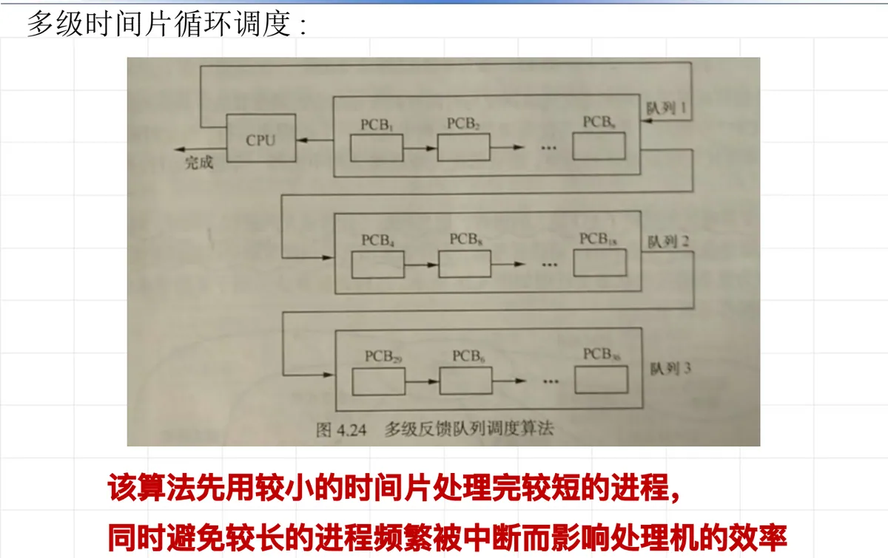

操作系统原理 · 第 6 章 处理机调度
6.7 循环轮转调度算法的发展
6.6 节讲的简单循环轮转调度只有一个就绪队列、一个固定时间片，实现简单，但它对长短进程一视同仁：时间片按最坏情况预留，进程一多就嫌小、进程一少又白付切换开销。这一节顺着「时间片该怎么定、队列该怎么分」这两条线索，讲循环轮转调度算法的两个发展方向——可变时间片轮转调度与多级时间片循环调度。它们分别回答了「时间片大小要不要随负载变」和「长短进程要不要区别对待」，也是 6.8 节混合调度的直接来路。
1. 可变时间片轮转调度
6.6 节的简单循环轮转调度用的是一个固定时间片：时间片按 q = t / n_max 计算，其中 t 是用户能接受的响应时间，n_max 是按最坏情况（系统中进程最多时）取的进程数。这种做法实现起来省事，代价是时间片的长度与系统当时的真实负载脱了钩：进程少的时候，系统仍然按「进程最多」的假设切成小片，每个进程没做多少事就被换下来，进程切换的次数白白增多。
可变时间片轮转调度的第一个「可变」正是针对这一点：时间片的大小是可变的，系统可根据系统中当前的进程数来确定时间片的大小。也就是说，6.6 节公式里那个固定的 n_max 被换成了系统当前实际的进程数 n——进程少时时间片取大一些，进程多时时间片取小一些，让时间片跟着负载走，而不是跟着最坏的假设走。
课件对这种算法给出的评价是：它从理论上减少了当系统中进程数很少时的系统开销。道理在于，进程数很少时，固定时间片下的每个进程都要被反复打断、反复做现场保护和现场恢复，这些切换时间并不产生任何有用的计算；时间片一放大，一个进程往往能在一次分配里多做很多事甚至直接做完，被打断的次数随之下降，切换开销自然就省了下来。补充一句实现上的说明：时间片每次都要按当前进程数重算，调度程序比维护一个常数时间片要麻烦一些，这是它换来开销下降的一点代价。
2. 多级时间片循环调度
第二个发展方向换了个切入口。可变时间片轮转调度调整的只是时间片的长度，所有就绪进程仍在同一个队列里按同一个规则排队；多级时间片循环调度则把就绪进程分开排队，让队列的级别和时间片的长度一起变化。它的做法是设置多个就绪队列，不同队列的优先级和时间片长度都不一样：
- 进程先进入高优先级队列，高优先级队列的时间片较小；
- 当高优先级的进程时间片用完之后，它进入下一级的队列——优先级降低，但时间片增大一倍；
- 依此类推，级别越低，进程排得越靠后，一次能连续运行的时间却越长。
名字里的「循环」仍然保留：同一级队列内部的进程还是轮流使用处理机，队列之间则靠「时间片用完就降级」衔接起来。一个进程如果在当前队列的时间片里没做完，就落到下一级队列重新排队；如果它在时间片内做完了，自然就离开了这套队列。低优先级队列的时间片是上一级的两倍，所以进程每降一级，被中断的频率就减半，直到它跑完或者落进最低一级队列为止——具体分几级由系统设定，本节只讲这个逐级加倍的结构。
这样安排的效果可以分成两句话来看，恰好对应长短两类进程：
- 对短进程而言，它一进系统就待在时间片最小的高优先级队列里，往往一两个小时间片就把活干完，不用排队等在大时间片后面——该算法先用较小的时间片处理完较短的进程，短进程的响应因而很快；
- 对长进程而言，它落到低优先级队列之后拿到的时间片成倍增大，一次可以连续计算较长时间，同时避免较长的进程频繁被中断而影响处理机的效率——切换次数少了，处理机的时间更多花在有效计算上，而不是花在换进换出上。
换句话说，多级时间片循环调度把「响应快」和「开销小」这两件本来互相拉扯的事分开照顾：短进程靠小时间片换响应，长进程靠大时间片换效率。图 1 把各级队列与它们各自的时间片画在一起，可以对照着看这个结构。

本节小结
- 循环轮转调度的两个发展方向，分别针对 6.6 节固定时间片的两个难点：时间片的长度要不要随负载调整、长短进程要不要区别对待。
- 可变时间片轮转调度让时间片的大小可变，由系统根据当前进程数来确定——相当于把 6.6 节固定时间片 q = t / n_max 里的 n_max 换成当前实际进程数 n；它从理论上减少了系统中进程数很少时的系统开销。
- 多级时间片循环调度设置多个就绪队列：进程先进入高优先级队列，该队列时间片较小；时间片用完之后进入下一级队列，优先级降低，时间片增大一倍，级别越低时间片越长。
- 它的效果是两头兼顾：短进程一开始就在时间片最小的高优先级队列里被迅速处理完，长进程落入低优先级队列后拿到成倍增大的时间片、不再频繁被中断，处理机效率因此提高。
- 这条「按级别分配不同时间片」的思路就是 6.8 节时间片与优先级混合调度算法的来路——那里只分高低两级就绪队列，时间片取 100 ms 和 500 ms，可以对照本节的多级结构一起看。